Evaluating Player Productivity in the WNBA
Evaluating Player Productivity in the WNBA
An in-depth analysis of Win Contribution (WC) metrics and how they measure player impact on team success
In the 2024 WNBA season, there were a total of 240 wins distributed across 12 teams. I sought to divide the 240 wins among every WNBA player to understand the contribution each player had on their team's record. I created a variable called 'Win Contribution' (WC) which is based on the metric created in Wages of Wins by David Berri, Martin Schmidt, and Stacey Brook. This metric allows us to allocate a team's wins to each of its players, consequently allowing us to assess and compare each player's productivity within and across teams. I'll explain the methodology below, test its accuracy, and provide the WC data for each player in each season in WNBA history.
Methodology
Winning a basketball game requires a team to score more points than they concede. Since points scored equals possessions acquired times offensive efficiency while points conceded equals possessions conceded times defensive efficiency, then by measuring how different statistics affect these four factors, we can understand how a player contributes to team wins.
- Point scored – How much is a point scored in terms of wins? To understand this, I regressed season wins (normalized to a 40 game season) to team points scored in three different WNBA eras: 1997-2006, 2007-2015, 2016-2024. Since the earlier eras showed less scoring and less possessions, I thought it was necessary to calculate different weights for each metric in these three different eras, although they did not drastically differ as you'll see in TABLE 1. I found that each additional point scored over a season creates .032 WCs for 2016-2024. (For simplicity, I will only highlight the coefficients for the 2016-2024 era in the text).
- Possession acquired – From 2016-2024, the average points per possession equaled 0.99. Thus, if each point scored contributes .032 extra WCs, and you get 0.99 points per possession, then each possession acquired creates .99 * .032 = .031 WCs.
- Point conceded – How much does a point allowed count toward wins? When regressing points conceded to wins, we see that each additional point allowed is worth -.031 WCs.
- Possession conceded – Again, since the average points per possession equals 0.99, and each point allowed contributes -.031 wins, then each possession conceded equals .99 * -.031 = -.031 WCs.
Evaluating the win value of each statistic:
Three-point field goals: Our regression shows that for the 2016-2024 seasons each point contributes .032 WCs, so making a 3-point field goal should contribute .096 WCs. However, to make a 3-point field goal you must employ a possession which costs -.031 WCs, so the win contribution of a three-point field goal is (3 * .032) - .031 = .064 WCs.
Two-point field goals: Like above, except multiplying points scored by 2 instead of 3 but still factoring the cost of using a field goal attempt. So, the WCs created from a 2-point field goal is (2* .032) - .031 = .032 WCs.
Missed field goal: Missing a field goal employs a possession without the return of the points scored. Thus, the win contribution of a player missing a field goal is -.031 WCs.
Free-throw made: Since multiple free-throw attempts can be taken on a given possession, basketball statistician John Hollinger estimated that each free-throw accounts for only .44 possessions. Therefore, the value of a free-throw made is (1*.032) – (.44 * -.031) = .018 WCs.
Free-throw missed: Again, since a free-throw is estimated to be only .44 of a possession, then missing a free-throw costs (.44 * -.031) = -.014 WCs.
Assists: Wages of Wins used an intricate regression analysis to conclude that an assist is adds about 2/3 wins of a point scored. John Hollinger proposed that for a successful assisted basket, a player must get open, receive a good pass, and make the basket. A passer is responsible for 1 of those three actions so on a two-point shot, an assist is worth 0.67 of a point. Therefore, we will also value an assist at 2/3 of a two-point basket so .67 * 0.32 = .021 WCs.
Offensive rebounds, defensive rebounds, and steals: All these statistics result in the acquisition of a possession, which is worth .031 WCs.
Turnovers: Because a team loses a possession on a turnover, the win contribution value is equal to that of a possession employed for -.031 WCs.
Blocked shots: I regressed an opponent's made two-point field goals versus blocked shots. In 2016-2024, each block decreases an opponent's made two-point field goals by .70, so if each two-point field goal contributes .032, then each block contributes .70 * .032 = .021 WCs.
Fouls: Regressing opponent made free-throws on team fouls, I see that each foul committed in the WNBA from 2016-2024 awards 1.33 free-throw attempts for the opponent. Since FT% in this era is 80%, I multiplied 1.33 *.80 to get 1.06 free-throws made by the opponent per personal foul. Thus, we can take 1.06 and multiply it by how many WCs an opponent free-throw made is (which is -.017 WCs) to get 1.06 * -.017 = -.018 WCs.
Defensive wins: Lastly, I wanted to contribute wins to each player based on their defensive contribution. To do this, I regressed wins on defensive efficiency and it equaled 0.99. Thus, if a player were to play an entire season and have a defensive efficiency rating of 5 points less than the WNBA average, that player would be worth 5 * 0.99 / 5 = 0.99 WCs from their defense alone. We divide by 5 here because the player in theory is contributing only 1/5 to that defensive rating as they share the floor with 4 other defenders.
We also must multiply by fractions of total season possessions that the player played too, as having a rating 5 points less than the WNBA average is more significant the more she played. Therefore, the final formula for defensive wins contributed for a player is (average WNBA defensive rating - player defensive rating) * (possessions played / total team possessions) / 5. The caveat of this metric is that the player's defensive rating is affected by the other 4 defenders she plays with and the other 5 offensive players she plays against.
Table 1: Total WCs for each statistic in the different WNBA eras
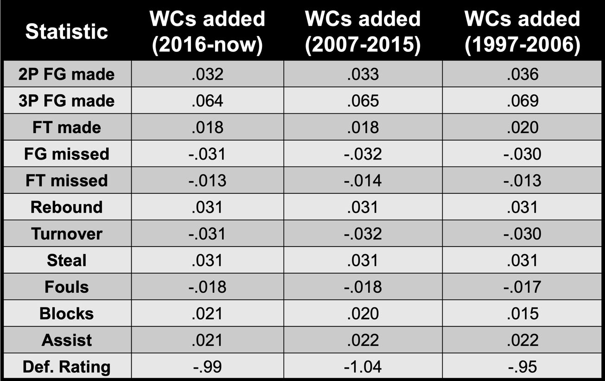Calculating wins for each player:
Now that we know how each of these statistics contributes to wins in the WNBA, we can compute the wins that each player added to their teams in a few steps:
1. Measure the value of a player's statistics.
I multiplied each player's season statistics by the coefficients calculated above to find the raw win contribution.
2. Adjust for position.
When doing this calculation, forwards and centers showed greater raw scores than guards. For instance, in 2024 these were the median win contributions per 100 possessions by position:
- Center: 0.38 WC/100 possessions
- Forward: 0.29 WC/100 possessions
- Guard: 0.20 WC/100 possessions
Yet we know that each position plays a crucial part in scoring and that a team employing five centers would likely struggle to dribble the ball up the floor, score from the perimeter, and distribute the ball. So, we multiply the median positional WC/100 by the player's total number of possessions to get their expected WC for the season. We then subtract the expected WC from their actual WC to find their relative WC for the season. For instance, Angel Reese's raw WC was 11.97 but based on being a forward and the number of possessions she played, we expected 6.33 WC, giving her a +5.64 WC above expected.
3. Find total win contributions from relative win contributions.
Since each team played 40 games, we would expect each team to win 20 games in 2024. Furthermore, if a player plays half of the team's total possessions of the season, we'd expect them to have 2 total wins simply based on their playing time. This is because the 20 expected team wins over a season are divided by the 5 players on the court giving each player 4 wins, but since the player only played half of the possessions, we'd expect 2 wins from them. Thus, we can take the player's relative WC and add it to the expected WC based on possessions played and get a final WC.
Doing this for Angel Reese who was +5.64 WC above expected, and based on playing 67.8% of her team possessions, we expect her to have 0.678 * 4, or 2.71 wins. Thus, her total WCs is 5.64 + 2.71 = 8.35 WCs.
Lastly, we observed that the sum of all player's WCs was greater than the total wins possible in a WNBA season, so we normalized the WCs to translate this metric to actual wins in a WNBA season. This normalization in 2024 resulted shrank Angel Reese's 8.35 WC to 5.07 real WNBA wins. We call this number the final WCs. Thus, we propose that Angel Reese was responsible for 5.07 wins for the Sky in the 2024 season.
Accuracy
To assess the accuracy of the finalized WCs, we analyzed how they compared to actual wins. To do this, we summed the finalized WC for all the players on a team and compared that to how many games a team won that season. A caveat is if a player got traded we didn't divide the WC or win shares amongst their teams. This will lead to a slight underestimate in the R2 value. We see that WC pretty accurately explains how much a team won that season with an R2 value of 0.824 for all seasons. Comparatively, Win Shares was more accurate with an R2 value of 0.852 for all team-seasons.
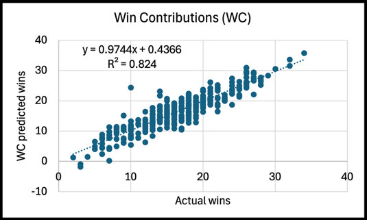 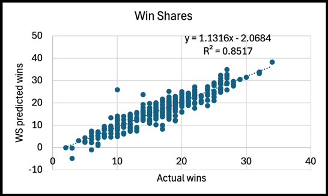However, for the 2024 season (the only season that RAPTOR data is available for), WC did significantly better than FiveThirtyEight's RAPTOR method at predicting WNBA wins, as WC had an R2 value of 0.956 while RAPTOR's was 0.861.
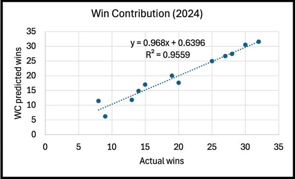 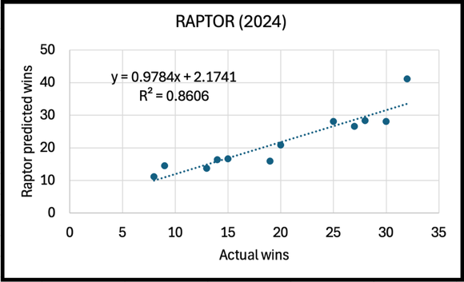WC/100 possessions also did better than other rate-based, all-inclusive, WNBA player metrics like Player Efficiency Rating (PER) and Player Impact Estimate (PIE). When taking averages of each metric for the players on a team, WC had an R2 value of 0.362 compared to 0.157 for PER and 0.052 for PIE.
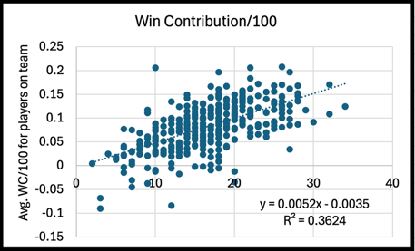 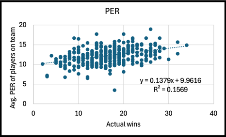 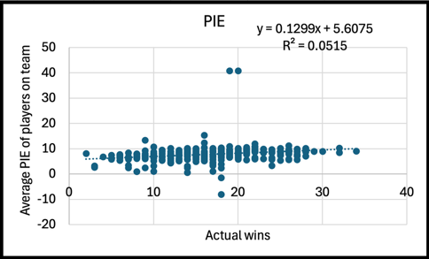Results
After calculating the wins each WNBA player is responsible for every WNBA season, we wanted to use our WC methodology to see which WNBA player contributed the most wins and which had the best wins per 100 possessions. Since the early WNBA players played in seasons with less than 40 games, we normalized all wins to a 40 game season to compare players of different eras. Players who played less than 1500 career minutes were removed from the analysis.
The tables below show the top-10 players in career wins contributed for each position and where they rank amongst their positional peers in wins/100.
Despite normalizing for positions, this list is still skewed in favor of bigs. If we examine guards, the highest win producing guard was Sue Bird with over 78.2 wins which narrowly edged Diana Taurasi with 77.6. Interestingly, these two players did not finish in the top-15 in wins/100 highlighting their incredible longevity.
The most efficient guard was easily Cynthia Cooper who contributed 0.32 wins per 100 possessions. Unfortunately, she was already 34 during the WNBA's inaugural season, or she may have been in the top-10 for career wins contributed considering her incredible win efficiency. The next closest guard in win efficiency is Sabrina Ionescu with 0.25 wins per 100.
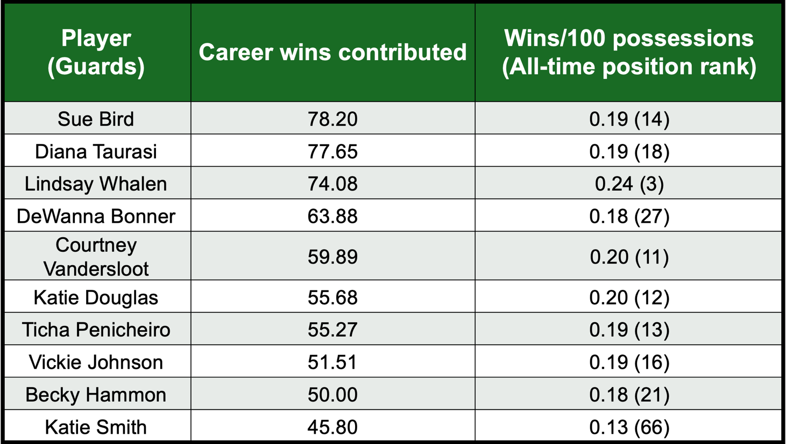 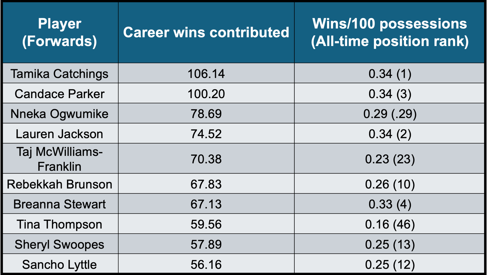Assuming Tamika Catchings played in an era that played 40 game seasons, she would have been responsible for over 106 wins, or over 2.5 season's worth. In terms of raw win production, Tamika Catchings is the WNBA leader followed my Sylvia Fowles and Candace Parker who both eclipsed over 100 career wins.
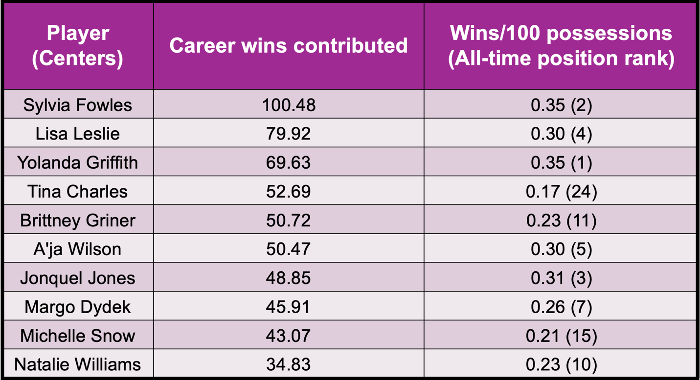If we normalize for possessions, Yolanda Griffith was the most efficient player with 0.353 wins per 100 possessions, followed by Sylvia Fowles and Tamika Catchings. Therefore, Sylvia Fowles and Tamika Catchings generated wins at an amazing volume and efficiency – Catchings is first in wins all time and third in win efficiency while Fowles is second in career wins and second in win rate. Both players have strong arguments for WNBA GOAT debates.
The single greatest year by a WNBA player was Nneka Ogwumike's 2016 season where we calculate that she contributed over 11.6 wins over a 40 game season. The most efficient year (minimum 250 minutes) was 2015 Candace Parker who contributed over half a win per 100 possessions at 0.50 wins/100.
Here is a comprehensive dataset for all seasons using data provided by wnba.com and basketball-reference.com:
View DataFinal thoughts
Since Win Shares correlates slightly better with actual wins than WCs, I don't see WC as supplanting Win Shares, at least not in its current form. Win Contribution does appear more accurate than other advanced metrics like RAPTOR, PER, and PIE. Thus, I see WC being used in parallel with Win Shares to provide an alternative tool to evaluate player performance in the WNBA, like how the NBA uses various all-inclusive metrics to evaluate player productivity such as Win Shares, Value over Replacement Player (VORP), Box Plus/Minus, etc.
Furthermore, this is just the beginning of the development of this statistical tool. A huge component of winning in basketball is man-to-man defense and preventing your opponent from scoring. By having access to advanced metrics such as opponent field goal attempts and makes, we can incorporate those statistics into WCs and better measure each player's defensive impact on the floor compared to the flawed defensive rating metric we currently use. Therefore, I will continue to improve Win Contribution to make it more accurate, all-inclusive metric to capture a player's role in winning in the WNBA.